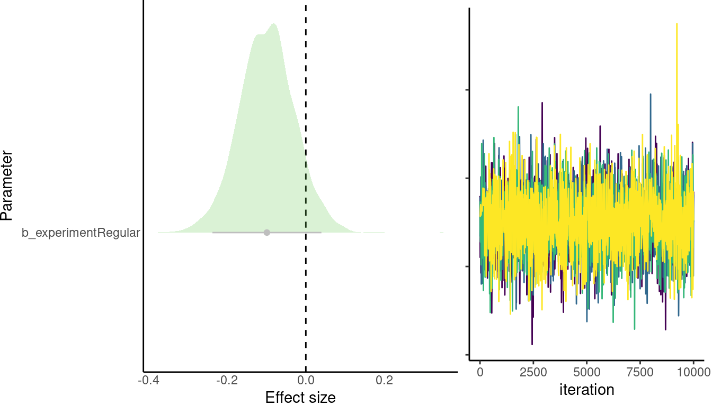
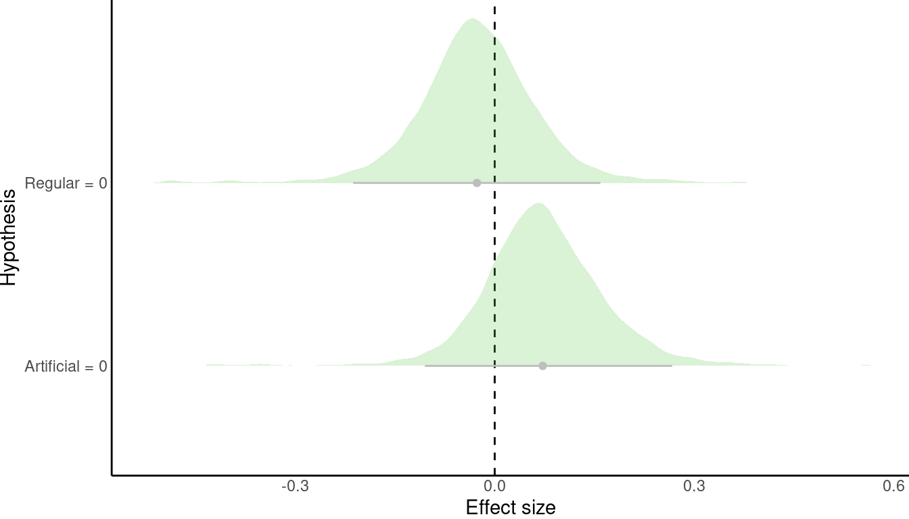

Inquiry calling rate in group and solo flights
Group flight coordination in Thyroptera
Source code and data found at https://github.com/maRce10/flight_coordination_in_Thyroptera
0.1 Load packages
Code
# add 'developer' to packages to be installed from github
x <- c("data.table", "lubridate", "devtools", github = "maRce10/warbleR", "readxl", "ranger", "caret", "e1071", "pbapply", "viridis", "ggplot2", "rlang", "Sim.DiffProc", "soundgen", "brms", "ggrepel", "posterior", "ggridges", "tidybayes", "purrr", bioconductor = "multtest", "umap", github = "maRce10/PhenotypeSpace", "metap"#, "markovchain", "igraph", "TraMineR", "spgs",
)
source("~/Dropbox/R_package_testing/sketchy/R/load_packages.R")
load_packages(x, quite = TRUE)0.2 Functions and global parameters
Code
warbleR_options(wl = 300, parallel = 1, bp = "frange", fast = TRUE, threshold = 15, ovlp = 20)
opts_knit$set(root.dir = "..")
theme_set(theme_classic(base_size = 24))
# set chunk options
opts_chunk$set( fig.width = 7, fig.height = 4, warning = FALSE, message = FALSE, tidy = FALSE)
cols <- viridis(10, alpha = 0.7)
source("~/Dropbox/R_package_testing/brmsish/R/extended_summary.R")
source("~/Dropbox/R_package_testing/brmsish/R/contrasts.R")
source("~/Dropbox/R_package_testing/brmsish/R/helpers.R")
# model parameters
chains <- 4
iter <- 10000
priors <- c(prior(normal(0, 10), "b"), prior(normal(0, 50), "Intercept"),
prior(student_t(3, 0, 20), "sd"), prior(student_t(3, 0, 20), "sigma"))0.3 Read data
Code
clls <- readRDS("./data/processed/curated_extended_selection_table_inquiry_calls_2020_&_2021.RDS")
sub_clls <- clls[!duplicated(clls$org.sound.files), ]
sub_clls$file.duration <- sub_clls$sound.file.samples / (sub_clls$sample.rate * 1000)
#
# metadat2 <- read.csv("./data/processed/metadata_inquiry_calls_2020_&_2021.csv", stringsAsFactors = FALSE)
metadat <- as.data.frame(read_excel("./data/raw/Anexo 1_Proyecto MPI enero 20-21.xlsx"))
names(metadat) <- gsub(" ", ".", names(metadat))
metadat$year <- substr(metadat$DÃa, 0, 4)
metadat$year[is.na(metadat$year)] <- "2021"
metadat <- metadat[metadat$tipo.de.video != "calibracion de video", ]
# audio solamente para identificacion de sonidos. TASA NO
metadat <- metadat[metadat$Audio != "60 y 61", ]
metadat$year.audio <- paste(metadat$year, metadat$Audio, sep = "-")
caps <- as.data.frame(read_excel("./data/raw/Proyecto MPI enero 2020_2.xlsx", sheet = "Capturas"))
# read acoustic parameter data
acous_param_l <- readRDS("./data/processed/acoustic_parameters_all_groups_specific_warbler_acoustic_measurements_curated_data_2020_&_2021.RDS")
# read as RDS
agg_pred <- readRDS("./data/processed/predicted_individual_in_group_flights_2020_&_2021.RDS")
# read diagnostics
diagnostics <- readRDS("./data/processed/random_forests_diagnostics_solo_flight.RDS")0.4 Explore data
Code
# remove groups with individuals with no solo flight
diagnostics$all_with_solo <- sapply(1:nrow(diagnostics), function(x)
{
Y <- acous_param_l[[diagnostics$group[x]]]
Y$sound.files <- sapply(Y$sound.files, function(x) strsplit(x, ".wav")[[1]][1])
Y$year.audio <- sapply(Y$sound.files, function(x) sub_clls$year.audio[gsub(".wav", "", sub_clls$org.sound.files) == x][1])
indivs <- strsplit(na.omit(Y$indiv[Y$year.audio == diagnostics$group_flight_files[x]])[1], split = "\\|")[[1]]
call_per_indiv <- sapply(indivs, function(y) sum(clls$Individuo == y & clls$Experimento == "vuelo solo"))
if (any(call_per_indiv == 0)) return("missing solo") else
return("OK")
}
)
diagnostics <- diagnostics[diagnostics$all_with_solo == "OK", ]
agg_pred <-agg_pred[agg_pred$group %in% diagnostics$group, ]
# get summary by group
summary_by_group_list <- lapply(unique(agg_pred$group), function(x) {
# print(x)
Y <- agg_pred[agg_pred$group == x, ]
#total number of calls above lowest group threshold for true positives
above_threshold_calls <- sum(Y$max_prob > diagnostics$min_prob_threshold[diagnostics$group == x])
#proportion of calls
prop_above_calls <- above_threshold_calls / nrow(Y)
return(data.frame(group = x, experiment = diagnostics$experiment[diagnostics$group == x], total_calls = nrow(Y), above_threshold_calls = above_threshold_calls, prop_above_calls, n_individuals = diagnostics$n_indiv[diagnostics$group == x]))
})
# calls per individual and group
calls_by_indiv_group <- aggregate(sound.files ~ group + pred_indiv, agg_pred, length)
names(calls_by_indiv_group) <- c("Group", "Individual_ID", "Number_of_calls")
calls_by_indiv_group <- calls_by_indiv_group[order(calls_by_indiv_group$Group), ]
write.csv(calls_by_indiv_group, "./data/processed/calls_by_indiv_group.csv", row.names = FALSE)
summary_by_group <- do.call(rbind, summary_by_group_list)
groups_by_cat <- aggregate(group ~ experiment, summary_by_group, FUN = function(x) length(unique(x)))
groups_by_cat| experiment | group |
|---|---|
| mixed | 33 |
| regular | 26 |
Group count by number of individuals and experiment
Code
groups_by_cat_n <- as.data.frame.matrix(table(summary_by_group$experiment, summary_by_group$n_individuals))
groups_by_cat_n| 2 | 3 | 4 | 5 | 6 | 7 | |
|---|---|---|---|---|---|---|
| mixed | 12 | 10 | 7 | 4 | 0 | 0 |
| regular | 2 | 7 | 8 | 5 | 2 | 2 |
1 Stats
1.1 Call rate
1.1.1 Format data
Code
# get group and solo call counts per individual, call rate in call/min
call_rate_list <- pblapply(1:nrow(diagnostics), function(x){
Y <- acous_param_l[[diagnostics$group[x]]]
Y$sound.files <- sapply(Y$sound.files, function(x) strsplit(x, ".wav")[[1]][1])
Y$year.audio <- sapply(Y$sound.files, function(x) sub_clls$year.audio[gsub(".wav", "", sub_clls$org.sound.files) == x][1])
indivs_in_group <- strsplit(Y$indiv[Y$year.audio == diagnostics$group_flight_files[x]], split = "\\|")[[1]]
calls_per_sound_file_list <- lapply(na.omit(c(indivs_in_group, "group")), function(y){
if (y != "group"){
tab <- table(Y$year.audio[Y$indiv == y])
if (length(tab) == 0) {tab <- 0
names(tab) <- y}
} else{
tab <- sum(Y$year.audio == diagnostics$group_flight_files[x], na.rm = TRUE)
names(tab) <- diagnostics$group_flight_files[x]
}
df <- data.frame(group = diagnostics$group[x], experiment = diagnostics$experiment[x], year.audio = names(tab), indiv = y, calls = as.vector(tab), flight.time = sapply(names(tab), USE.NAMES = FALSE, function(x) (round(as.numeric(metadat$Tiempo.de.vuelo[metadat$year.audio == x][1]) * 60 / 0.04166667))), file.duration = sapply(names(tab), function(x) (sub_clls$file.duration[sub_clls$year.audio == x][1])))
return(df)
}
)
calls_per_sound_file <- do.call(rbind, calls_per_sound_file_list)
calls_per_sound_file$rate <- calls_per_sound_file$calls / calls_per_sound_file$file.duration * 60 # calls
return(calls_per_sound_file)
})
call_rate_by_group <- do.call(rbind, call_rate_list)
rownames(call_rate_by_group) <- 1:nrow(call_rate_by_group)
# add call rate to those missing
call_rate_by_group$rate <- ifelse(!is.na(call_rate_by_group$rate), call_rate_by_group$rate, call_rate_by_group$calls / call_rate_by_group$flight.time)
# add sex
call_rate_by_group$sex <- sapply(call_rate_by_group$indiv, function(x) if(x != "group") na.exclude(caps$Sexo[caps$Murci == x])[1] else NA, USE.NAMES = FALSE)
call_rate_by_group$sex <- ifelse(call_rate_by_group$sex == "m", "Male", "Female")
# add age
call_rate_by_group$age <- sapply(call_rate_by_group$indiv, function(x) if(x != "group") na.exclude(caps$Edad[caps$Murci == x])[1] else NA, USE.NAMES = FALSE)
call_rate_by_group$age <- ifelse(call_rate_by_group$age == "sa", "Sub-adult", "Adult")
# reproductive stage
call_rate_by_group$reprod.stg <- sapply(call_rate_by_group$indiv, function(x) if(x != "group") na.exclude(caps$`Estado reproductivo`[caps$Murci == x])[1] else NA, USE.NAMES = FALSE)
call_rate_by_group$reprod.stg[call_rate_by_group$reprod.stg == "p?"] <- "Pregnant"
call_rate_by_group$reprod.stg[call_rate_by_group$reprod.stg == "ne"] <- "Inactive"
call_rate_by_group$group.size <-sapply(call_rate_by_group$group, function(x) diagnostics$n_indiv[diagnostics$group == x])
# order levels
call_rate_by_group$experiment <- factor(call_rate_by_group$experiment, levels = c("regular", "mixed"))
call_rate_by_group$type <- factor(ifelse(call_rate_by_group$indiv == "group", "group", "solo"), levels = c("solo", "group"))
saveRDS(call_rate_by_group, "./data/processed/call_rate_by_group.RDS")Code
# get group and solo call counts per individual, call rate in call/min
call_rate_indiv_list <- pblapply(1:nrow(diagnostics), function(x){
# print(x)
Y <- acous_param_l[[diagnostics$group[x]]]
Y$pred.id <- NA
# add id for group flights
Y$pred.id[Y$experiment != "vuelo solo"] <- sapply(Y$sound.files[Y$experiment != "vuelo solo"], function(x) agg_pred$pred_indiv[agg_pred$sound.files == x])
Y$sound.files <- sapply(Y$sound.files, function(x) strsplit(x, ".wav")[[1]][1])
Y$year.audio <- sapply(Y$sound.files, function(x) sub_clls$year.audio[gsub(".wav", "", sub_clls$org.sound.files) == x][1])
indivs_in_group <- na.omit(strsplit(Y$indiv[Y$year.audio == diagnostics$group_flight_files[x]], split = "\\|")[[1]])
rate_indiv_list <- lapply(indivs_in_group, function(y){
# print(y)
year.audio.group <- na.omit(unique(Y$year.audio[Y$experiment != "vuelo solo"]))
year.audio.solo <- na.omit(unique(Y$year.audio[Y$indiv == y & Y$experiment == "vuelo solo"]))
flight.time.group <- round(as.numeric(metadat$Tiempo.de.vuelo[metadat$year.audio == year.audio.group][1]) * 60 / 0.04166667)
flight.time.solo <- sapply(year.audio.solo, function(w) round(as.numeric(metadat$Tiempo.de.vuelo[metadat$year.audio == w][1]) * 60 / 0.04166667)
)
file.duration.group <- sub_clls$file.duration[sub_clls$year.audio == year.audio.group][1]
file.duration.solo <- sapply(year.audio.solo, function(w) sub_clls$file.duration[sub_clls$year.audio == w][1])
calls.solo <- sapply(year.audio.solo, function(w) sum(Y$year.audio == w))
calls.group <- sum(Y$year.audio == year.audio.group & Y$pred.id == y)
df <- data.frame(indiv = y, group = diagnostics$group[x], size = length(indivs_in_group), experiment = diagnostics$experiment[x], type = c("group", "solo"), year.audio = c(year.audio.group, paste(year.audio.solo, collapse = "/")), calls = c(calls.group, sum(calls.solo)), flight.time = c(flight.time.group, sum(flight.time.solo)), file.duration = c(file.duration.group, sum(file.duration.solo)))
return(df)
}
)
rate_indiv <- do.call(rbind, rate_indiv_list)
rate_indiv$rate <- rate_indiv$calls / rate_indiv$file.duration * 60 # calls
return(rate_indiv)
})
call_rate_indiv <- do.call(rbind, call_rate_indiv_list)
rownames(call_rate_indiv) <- 1:nrow(call_rate_indiv)
# add call rate to those missing
call_rate_indiv$rate <- ifelse(!is.na(call_rate_indiv$rate), call_rate_indiv$rate, call_rate_indiv$calls / call_rate_indiv$flight.time)
# add sex
call_rate_indiv$sex <- sapply(call_rate_indiv$indiv, function(x) if(x != "group") na.exclude(caps$Sexo[caps$Murci == x])[1] else NA, USE.NAMES = FALSE)
call_rate_indiv$sex <- ifelse(call_rate_indiv$sex == "m", "Male", "Female")
# add age
call_rate_indiv$age <- sapply(call_rate_indiv$indiv, function(x) if(x != "group") na.exclude(caps$Edad[caps$Murci == x])[1] else NA, USE.NAMES = FALSE)
call_rate_indiv$age <- ifelse(call_rate_indiv$age == "sa", "Sub-adult", "Adult")
# reproductive stage
call_rate_indiv$reprod.stg <- sapply(call_rate_indiv$indiv, function(x) if(x != "group") na.exclude(caps$`Estado reproductivo`[caps$Murci == x])[1] else NA, USE.NAMES = FALSE)
call_rate_indiv$reprod.stg[call_rate_indiv$reprod.stg == "p?"] <- "Pregnant"
call_rate_indiv$reprod.stg[call_rate_indiv$reprod.stg == "ne"] <- "Inactive"
call_rate_indiv$group.size <-sapply(call_rate_indiv$group, function(x) diagnostics$n_indiv[diagnostics$group == x])
# order levels
call_rate_indiv$experiment <- factor(call_rate_indiv$experiment, levels = c("regular", "mixed"))
call_rate_indiv$type <- factor(ifelse(call_rate_indiv$type == "group", "group", "solo"), levels = c("solo", "group"))
saveRDS(call_rate_indiv, "./data/processed/call_rate_by_individual.RDS")Code
call_rate_by_group <- readRDS("./data/processed/call_rate_by_group.RDS")
call_rate_indiv <- readRDS("./data/processed/call_rate_by_individual.RDS")
call_rate_by_group <- call_rate_by_group[call_rate_by_group$type != "solo", ]
call_rate_by_group$type <- "overall.group"
call_rate_indiv$type <- as.character(call_rate_indiv$type)
call_rate_indiv$type[call_rate_indiv$type == "group"] <- "indiv.group"
call_rate <- rbind(call_rate_by_group[, intersect(names(call_rate_by_group), names(call_rate_indiv))
], call_rate_indiv[, intersect(names(call_rate_by_group), names(call_rate_indiv))
])
# aggregate for plot
agg_rate <- aggregate(rate ~ experiment + type + group.size, data = call_rate, FUN = mean)
agg_rate$sd <- aggregate(rate ~ experiment + type + group.size, data = call_rate, FUN = sd)$rate
agg_rate$type <- factor(agg_rate$type, levels = c("solo", "indiv.group", "overall.group"))
# ggplot(agg_rate[agg_rate$group.size < 6, ], aes(x = type, y = rate)) +
# geom_point(color = viridis(10)[3], size = 2) +
# geom_errorbar(aes(ymin = rate - sd, ymax = rate + sd), color = viridis(10)[3], width=.1, lwd = 1.1) +
# geom_hline(yintercept = mean(call_rate$rate[call_rate$type == "solo"], na.rm = TRUE), lty = 2, alpha = 0.5) +
# labs(x = "Flight", y = "Call rate (calls / min)") +
# facet_grid(group.size ~ experiment) +
# theme(axis.text.x = element_text(angle = 45, hjust = 1))1.1.2 Individual call rate in solo and group flight
Code
# aggregate for plot
agg_rate_indiv <- aggregate(rate ~ experiment + type + group.size + indiv, data = call_rate_indiv, FUN = mean)
agg_rate_indiv$sd <- aggregate(rate ~ experiment + type + group.size + indiv, data = call_rate_indiv, FUN = sd)$rate
agg_rate_indiv <- agg_rate_indiv[agg_rate_indiv$indiv != "group", ]
mixed_ids <- unique(agg_rate_indiv$indiv[agg_rate_indiv$experiment == "mixed"])
mixed_l <- lapply(mixed_ids, function(x) {
X <- agg_rate_indiv[agg_rate_indiv$indiv == x, ]
X <- X[X$experiment == "mixed" | X$type == "solo", ]
if (sum(X$experiment == "mixed") > 1)
X <- X[X$group.size == max(X$group.size[X$experiment == "mixed"]) | X$type == "solo",]
if (nrow(X) == 1)
X <- X[vector(), ]
return(X)
})
mixed <- do.call(rbind, mixed_l)
mixed$experiment <- "mixed"
# regular
regular_ids <- unique(agg_rate_indiv$indiv[agg_rate_indiv$experiment == "regular"])
regular_l <- lapply(regular_ids, function(x) {
X <- agg_rate_indiv[agg_rate_indiv$indiv == x, ]
X <- X[X$experiment == "regular" | X$type == "solo", ]
if (sum(X$experiment == "regular") > 1)
X <- X[X$group.size == max(X$group.size[X$experiment == "regular"]) | X$type == "solo",]
if (nrow(X) == 1)
X <- X[vector(), ]
return(X)
})
regular <- do.call(rbind, regular_l)
regular$experiment <- "regular"
sub_agg <- rbind(mixed, regular)
sub_agg$group <- sapply(seq_len(nrow(sub_agg)), function(x){
out <- if (sub_agg$type[x] == "Solo")
NA else
unique(metadat$Grupo[metadat$Individuo == sub_agg$indiv[x] & grepl(if (sub_agg$experiment[x] == "regular") "sin sonido" else "mixto", metadat$Experimento) & !is.na(metadat$Individuo) & !is.na(metadat$Experimento)])
return(out)
})
sub_agg$experiment_f <- factor(ifelse(sub_agg$experiment == "regular", "Regular", "Artificial"), levels = c("Regular", "Artificial"))
sub_agg$type_f <- factor(ifelse(sub_agg$type == "solo", "Solo", "In group"), levels = c("Solo", "In group"))
# boxplots
fill_color <- adjustcolor("#e85307", 0.6)
# aggregate data for sample sizes on plot
agg_dat <- aggregate(rate ~ type_f + experiment_f, sub_agg, mean)
agg_dat$n <- sapply(1:nrow(agg_dat), function(x) length(unique(sub_agg$indiv[sub_agg$type_f == agg_dat$type_f[x] & sub_agg$experiment_f == agg_dat$experiment_f[x]])))
agg_dat$n.labels <- paste("n =", agg_dat$n)
agg_dat$experiment_f <- factor(agg_dat$experiment_f)
agg_dat$type_f <- factor(agg_dat$type_f)
agg_dat$n.group <- sapply(1:nrow(agg_dat), function(x) length(unique(unlist(sub_agg$group[sub_agg$type_f == agg_dat$type_f[x] & sub_agg$experiment_f == agg_dat$experiment_f[x]]))))
agg_dat$n.labels <- ifelse(agg_dat$type_f == "In group", paste0(agg_dat$n.labels, " (groups = ", agg_dat$n.group, ")"), agg_dat$n.labels)
ggplot(sub_agg, aes(y = rate, x = type_f)) +
## add half-violin from {ggdist} package
ggdist::stat_halfeye(
fill = fill_color,
alpha = 0.5,
## custom bandwidth
adjust = .5,
## adjust height
width = .6,
.width = 0,
## move geom to the cright
justification = -.2,
point_colour = NA
) +
geom_boxplot(fill = fill_color,
width = .15,
## remove outliers
outlier.shape = NA ## `outlier.shape = NA` works as well
) +
## add justified jitter from the {gghalves} package
gghalves::geom_half_point(
color = fill_color,
## draw jitter on the left
side = "l",
## control range of jitter
range_scale = .4,
## add some transparency
alpha = .5,
transformation = ggplot2::position_jitter(height = 0)
) +
labs(x="Flight", y="Call rate (calls/min)"
) +
ylim(c(-1.5, 30)) +
geom_text(data = agg_dat, aes(y = rep(-1.5, nrow(agg_dat)), x = type_f, label = n.labels), nudge_x = 0, size = 6) +
theme(axis.text.x = element_text(angle = 15, hjust = 1)) +
facet_grid( ~ experiment_f)
Code
call_rate_indiv <- call_rate_indiv[!is.na(call_rate_indiv$rate) & call_rate_indiv$rate > 0, ]
call_rate_indiv$experiment.type <- ifelse(call_rate_indiv$type == "solo", "solo", paste(call_rate_indiv$experiment, call_rate_indiv$type, sep = "-"))
call_rate_indiv$experiment.type <- gsub("mixed-indiv.group", "artificial.group", call_rate_indiv$experiment.type)
call_rate_indiv$experiment.type <- gsub("regular-indiv.group", "real.group", call_rate_indiv$experiment.type)
call_rate_indiv$experiment.type <- factor(call_rate_indiv$experiment.type, levels = c("solo", "real.group", "artificial.group"))
# mean centering group size
call_rate_indiv$group.size <- call_rate_indiv$group.size - mean(call_rate_indiv$group.size)
mod <- brm(
formula = rate ~ experiment.type + experiment.type:group.size + (1 | indiv),
iter = iter,
thin = 1,
data = call_rate_indiv,
family = lognormal(),
silent = 2,
chains = chains,
cores = chains,
prior = priors,
file = "./data/processed/individual_call_rate_solo_vs_group"
)Code
extended_summary(read.file = "./data/processed/individual_call_rate_solo_vs_group.rds", gsub.pattern = "experiment.type", gsub.replacement = "solo_vs_", remove.intercepts = TRUE, highlight = TRUE, print.name = FALSE)| priors | formula | iterations | chains | thinning | warmup | diverg_transitions | rhats > 1.05 | min_bulk_ESS | min_tail_ESS | seed | |
|---|---|---|---|---|---|---|---|---|---|---|---|
| 1 | b-normal(0, 10) Intercept-normal(0, 50) sd-student_t(3, 0, 20) sigma-student_t(3, 0, 20) | rate ~ experiment.type + experiment.type:group.size + (1 | indiv) | 10000 | 4 | 1 | 5000 | 0 | 0 | 26177.38 | 16125.3 | 852675893 |
| Estimate | l-95% CI | u-95% CI | Rhat | Bulk_ESS | Tail_ESS | |
|---|---|---|---|---|---|---|
| b_solo_vs_real.group | -1.297 | -1.551 | -1.044 | 1 | 34685.25 | 16697.46 |
| b_solo_vs_artificial.group | -1.520 | -1.813 | -1.223 | 1 | 30590.21 | 16125.30 |
| b_solo_vs_solo:group.size | -0.032 | -0.139 | 0.074 | 1 | 26177.38 | 16509.06 |
| b_solo_vs_real.group:group.size | -0.139 | -0.299 | 0.024 | 1 | 26201.68 | 16497.70 |
| b_solo_vs_artificial.group:group.size | -0.312 | -0.532 | -0.092 | 1 | 29927.08 | 16374.72 |

Takeaways
- Individuals call at lower rates during group flight (both real and artificial) compared to solo flight
- Rates also decreases in artificial groups as a function of group size
1.2 Individual call rate vs overall group call rate
Code
call_rate_by_group <- readRDS("./data/processed/call_rate_by_group.RDS")
call_rate_by_group$experiment.type <- ifelse(call_rate_by_group$type == "solo", "solo", paste(call_rate_by_group$experiment, call_rate_by_group$type, sep = "-"))
call_rate_by_group$experiment.type <- gsub("mixed.group", "artificial.group", call_rate_by_group$experiment.type)
call_rate_by_group$experiment.type <- gsub("regular.group", "real.group", call_rate_by_group$experiment.type)
call_rate_by_group$experiment.type <- factor(call_rate_by_group$experiment.type, levels = c("solo", "real.group", "artificial.group"))
# aggregate for plot
agg_rate_group <- aggregate(rate ~ experiment + type + group.size + group, data = call_rate_by_group, FUN = mean)
agg_rate_group$sd <- aggregate(rate ~ experiment + type + group.size + group, data = call_rate_by_group, FUN = sd)$rate
agg_rate_group <- agg_rate_group[agg_rate_group$type != "indiv.group", ]
mixed_ids <- unique(agg_rate_group$group[agg_rate_group$experiment == "mixed"])
mixed_l <- lapply(mixed_ids, function(x) {
X <- agg_rate_group[agg_rate_group$group == x, ]
X <- X[X$experiment == "mixed" | X$type == "solo", ]
if (sum(X$experiment == "mixed") > 1)
X <- X[X$group.size == max(X$group.size[X$experiment == "mixed"]) | X$type == "solo",]
if (nrow(X) == 1)
X <- X[vector(), ]
return(X)
})
mixed <- do.call(rbind, mixed_l)
mixed$experiment <- "mixed"
# regular
regular_ids <- unique(agg_rate_group$group[agg_rate_group$experiment == "regular"])
regular_l <- lapply(regular_ids, function(x) {
X <- agg_rate_group[agg_rate_group$group == x, ]
X <- X[X$experiment == "regular" | X$type == "solo", ]
if (sum(X$experiment == "regular") > 1)
X <- X[X$group.size == max(X$group.size[X$experiment == "regular"]) | X$type == "solo",]
if (nrow(X) == 1)
X <- X[vector(), ]
return(X)
})
regular <- do.call(rbind, regular_l)
regular$experiment <- "regular"
sub_agg <- rbind(mixed, regular)
sub_agg$experiment_f <- factor(ifelse(sub_agg$experiment == "regular", "Regular", "Artificial"), levels = c("Regular", "Artificial"))
sub_agg$type_f <- factor(ifelse(sub_agg$type == "solo", "Solo", "Overall group"), levels = c("Solo", "Overall group"))
agg_dat$type_f <- as.character(agg_dat$type_f)
agg_dat$type_f <- gsub("In group", "Overall group", agg_dat$type_f)
agg_dat$type_f <- as.factor(agg_dat$type_f)
# composed box plot
ggplot(sub_agg, aes(y = rate, x = type_f)) +
## add half-violin from {ggdist} package
ggdist::stat_halfeye(
fill = fill_color,
alpha = 0.5,
## custom bandwidth
adjust = .5,
## adjust height
width = .6,
.width = 0,
## move geom to the cright
justification = -.2,
point_colour = NA
) +
geom_boxplot(fill = fill_color,
width = .15,
## remove outliers
outlier.shape = NA ## `outlier.shape = NA` works as well
) +
## add justified jitter from the {gghalves} package
gghalves::geom_half_point(
color = fill_color,
## draw jitter on the left
side = "l",
## control range of jitter
range_scale = .4,
## add some transparency
alpha = .5,
transformation = ggplot2::position_jitter(height = 0)
) +
labs(x="Flight", y="Call rate (calls/min)"
) +
ylim(c(-1.5, 30)) +
geom_text(data = agg_dat, aes(y = rep(-1.5, nrow(agg_dat)), x = type_f, label = n.labels), nudge_x = 0, size = 6) +
theme(axis.text.x = element_text(angle = 15, hjust = 1)) +
facet_grid( ~ experiment_f)
Code
call_rate_by_group <- readRDS("./data/processed/call_rate_by_group.RDS")
call_rate_by_group$experiment.type <- ifelse(call_rate_by_group$type == "solo", "solo", paste(call_rate_by_group$experiment, call_rate_by_group$type, sep = "-"))
call_rate_by_group$experiment.type <- gsub("mixed.group", "artificial.group", call_rate_by_group$experiment.type)
call_rate_by_group$experiment.type <- gsub("regular.group", "real.group", call_rate_by_group$experiment.type)
call_rate_by_group$experiment.type <- factor(call_rate_by_group$experiment.type, levels = c("solo", "real.group", "artificial.group"))
# mean centering group size
call_rate_by_group$group.size <- call_rate_by_group$group.size - mean(call_rate_by_group$group.size)
mod <- brm(
formula = rate ~ experiment.type + experiment.type:group.size + (1 | group),
iter = iter,
thin = 1,
data = call_rate_by_group,
family = lognormal(),
silent = 2,
chains = chains,
cores = chains,
prior = priors,
file = "./data/processed/individual_vs_group_call_rate"
)Code
extended_summary(read.file = "./data/processed/individual_vs_group_call_rate.rds", gsub.pattern = "experiment.type", gsub.replacement = "solo_vs_", remove.intercepts = TRUE, highlight = TRUE, print.name = FALSE)| priors | formula | iterations | chains | thinning | warmup | diverg_transitions | rhats > 1.05 | min_bulk_ESS | min_tail_ESS | seed | |
|---|---|---|---|---|---|---|---|---|---|---|---|
| 1 | b-normal(0, 10) Intercept-normal(0, 50) sd-student_t(3, 0, 20) sigma-student_t(3, 0, 20) | rate ~ experiment.type + experiment.type:group.size + (1 | group) | 10000 | 4 | 1 | 5000 | 0 | 0 | 16437.37 | 14658.44 | 1799142864 |
| Estimate | l-95% CI | u-95% CI | Rhat | Bulk_ESS | Tail_ESS | |
|---|---|---|---|---|---|---|
| b_solo_vs_real.group | 0.292 | -0.019 | 0.604 | 1 | 30238.76 | 14658.44 |
| b_solo_vs_artificial.group | 0.166 | -0.159 | 0.487 | 1 | 22187.17 | 16136.54 |
| b_solo_vs_solo:group.size | -0.023 | -0.109 | 0.068 | 1 | 16437.37 | 14988.15 |
| b_solo_vs_real.group:group.size | 0.023 | -0.178 | 0.226 | 1 | 26569.51 | 14684.60 |
| b_solo_vs_artificial.group:group.size | 0.039 | -0.224 | 0.300 | 1 | 21294.80 | 15810.40 |

Takeaways
- No difference in overall call rate between solo and group flights (both real and artificial)
1.3 Gaps
1.3.1 Individual gaps in solo vs group flights
Code
seltab <- attributes(clls)$check.results
seltab$year.audio <- clls$year.audio
seltab <- seltab[!is.na(seltab$sound.files), ]
seltab$type <- sapply(seltab$year.audio, function(x) metadat$Experimento[metadat$year.audio == x][1])
seltab$group <- sapply(seltab$year.audio, function(x) metadat$Grupo[metadat$year.audio == x][1])
seltab <- seltab[!is.na(seltab$group), ]
seltab$type <-ifelse(grepl("solo", seltab$type), "solo", "group")
seltab$indiv <- sapply(1:nrow(seltab), function(x) if (seltab$type[x] == "solo") metadat$Individuo[metadat$year.audio == seltab$year.audio[x]] else "group")
seltab$start <- seltab$orig.start
seltab$end <- seltab$orig.end
# get group and solo call counts per individual, call rate in call/min
gaps_indiv_list <- pblapply(1:nrow(diagnostics), function(x){
# print(x)
# get indivs
sound.files <- acous_param_l[[diagnostics$group[x]]]$sound.files
Y <- seltab[seltab$sound.files %in% sound.files, ]
# add id for group flights
Y$pred.id <- NA
Y$pred.id[Y$type == "group"] <- sapply(Y$sound.files[Y$type == "group"], function(x) agg_pred$pred_indiv[agg_pred$sound.files == x])
Y <- Y[order(Y$orig.sound.files, Y$start), ]
gaps_indiv_list <- lapply(unique(Y$indiv), function(y){
# print(y)
if (y != "group"){
W <- Y[Y$indiv == y, ]
W$sound.files <- W$orig.sound.files
gaps.solo <- data.frame(group = diagnostics$group[x], indiv = y, experiment = diagnostics$experiment[x], type = "solo", gaps = if (nrow(W) > 0) na.omit(gaps(W, pb = FALSE)$gaps) else NA)
Z <- Y[Y$pred.id == y & !is.na(Y$pred.id), ]
Z$sound.files <- Z$orig.sound.files
group.gaps <- if (nrow(Z) > 0) na.omit(gaps(Z, pb = FALSE)$gaps) else NA
gaps.group <- data.frame(group = diagnostics$group[x], indiv = y, experiment = diagnostics$experiment[x], type = "indiv.group", gaps = if (length(group.gaps) > 0) group.gaps else NA)
gaps_data <- rbind(gaps.group, gaps.solo)
} else {
Q <- Y[Y$type == "group", ]
Q$sound.files <- Q$orig.sound.files
gaps_data <- data.frame(group = diagnostics$group[x], indiv = y, experiment = diagnostics$experiment[x], type = "overall.group", gaps = na.omit(gaps(Q, pb = FALSE)$gaps))
return(gaps_data)
}
})
gaps_indiv <- do.call(rbind, gaps_indiv_list)
gaps_indiv$group.size <- diagnostics$n_indiv[x]
return(gaps_indiv)
}
)
gaps_indiv <- do.call(rbind, gaps_indiv_list)
# add sex
gaps_indiv$sex <- sapply(gaps_indiv$indiv, function(x) if(x != "group") na.exclude(caps$Sexo[caps$Murci == x])[1] else NA, USE.NAMES = FALSE)
gaps_indiv$sex <- ifelse(gaps_indiv$sex == "m", "Male", "Female")
# add age
gaps_indiv$age <- sapply(gaps_indiv$indiv, function(x) if(x != "group") na.exclude(caps$Edad[caps$Murci == x])[1] else NA, USE.NAMES = FALSE)
gaps_indiv$age <- ifelse(gaps_indiv$age == "sa", "Sub-adult", "Adult")
# reproductive stage
gaps_indiv$reprod.stg <- sapply(gaps_indiv$indiv, function(x) if(x != "group") na.exclude(caps$`Estado reproductivo`[caps$Murci == x])[1] else NA, USE.NAMES = FALSE)
gaps_indiv$reprod.stg[gaps_indiv$reprod.stg == "p?"] <- "Pregnant"
gaps_indiv$reprod.stg[gaps_indiv$reprod.stg == "ne"] <- "Inactive"
gaps_indiv$group.size <-sapply(gaps_indiv$group, function(x) diagnostics$n_indiv[diagnostics$group == x])
# order levels
gaps_indiv$experiment <- factor(gaps_indiv$experiment, levels = c("Regular", "Artificial"))
gaps_indiv$experiment.type <- ifelse(gaps_indiv$type == "solo", "solo", paste(gaps_indiv$experiment, gaps_indiv$type, sep = "-"))
# #find individuals with repeated solo data
# indivs_2_sets <- sapply(unique(gaps_indiv$indiv), function(x) length(unique(gaps_indiv$group[gaps_indiv$indiv == x & gaps_indiv$type == "solo"])))
#
# # remove those
# indivs_2_sets <- names(indivs_2_sets)[indivs_2_sets > 1]
# indivs_2_sets <- indivs_2_sets[indivs_2_sets != "group"]
#
# gaps_indiv_filter_list <- lapply(unique(gaps_indiv$indiv), function(x){
#
# Y <- gaps_indiv[gaps_indiv$indiv == x, ]
#
# if(x %in% indivs_2_sets){
# Y <- Y[Y$group == unique(Y$group)[1] & Y$type == "solo" | Y$type == "indiv.group",]
#
# }
#
# return(Y)
#
# })
# gaps_indiv_filter <- do.call(rbind, gaps_indiv_filter_list)
#
# # all have 1
# all(sapply(unique(gaps_indiv_filter$indiv), function(x) length(unique(gaps_indiv_filter$group[gaps_indiv_filter$indiv == x & gaps_indiv_filter$type == "solo"]))) <= 1)
saveRDS(gaps_indiv, "./data/processed/gaps_by_individual.RDS")Code
gaps_indiv <- readRDS("./data/processed/gaps_by_individual.RDS")
# aggregate for plot
agg_gaps <- aggregate(gaps ~ experiment + type + group.size, data = gaps_indiv, FUN = mean)
agg_gaps$sd <- aggregate(gaps ~ experiment + type + group.size, data = gaps_indiv, FUN = sd)$gapsCode
# aggregate for plot
agg_gaps_indiv <- aggregate(gaps ~ experiment + type + group.size + indiv, data = gaps_indiv, FUN = mean)
agg_gaps_indiv$sd <- aggregate(gaps ~ experiment + type + group.size + indiv, data = gaps_indiv, FUN = sd)$gaps
agg_gaps_indiv <- agg_gaps_indiv[agg_gaps_indiv$indiv != "group", ]
mixed_ids <- unique(agg_gaps_indiv$indiv[agg_gaps_indiv$experiment == "mixed"])
mixed_l <- lapply(mixed_ids, function(x) {
X <- agg_gaps_indiv[agg_gaps_indiv$indiv == x, ]
X <- X[X$experiment == "mixed" | X$type == "solo", ]
if (sum(X$experiment == "mixed") > 1)
X <- X[X$group.size == max(X$group.size[X$experiment == "mixed"]) | X$type == "solo",]
if (nrow(X) == 1)
X <- X[vector(), ]
return(X)
})
mixed <- do.call(rbind, mixed_l)
mixed$experiment <- "mixed"
# regular
regular_ids <- unique(agg_gaps_indiv$indiv[agg_gaps_indiv$experiment == "regular"])
regular_l <- lapply(regular_ids, function(x) {
X <- agg_gaps_indiv[agg_gaps_indiv$indiv == x, ]
X <- X[X$experiment == "regular" | X$type == "solo", ]
if (sum(X$experiment == "regular") > 1)
X <- X[X$group.size == max(X$group.size[X$experiment == "regular"]) | X$type == "solo",]
if (nrow(X) == 1)
X <- X[vector(), ]
return(X)
})
regular <- do.call(rbind, regular_l)
regular$experiment <- "regular"
sub_agg <- rbind(mixed, regular)
sub_agg$group <- sapply(seq_len(nrow(sub_agg)), function(x){
out <- if (sub_agg$type[x] == "Solo")
NA else
unique(metadat$Grupo[metadat$Individuo == sub_agg$indiv[x] & grepl(if (sub_agg$experiment[x] == "regular") "sin sonido" else "mixto", metadat$Experimento) & !is.na(metadat$Individuo) & !is.na(metadat$Experimento)])
return(out)
})
sub_agg$experiment_f <- factor(ifelse(sub_agg$experiment == "regular", "Regular", "Artificial"), levels = c("Regular", "Artificial"))
sub_agg$type_f <- factor(ifelse(sub_agg$type == "solo", "Solo", "In group"), levels = c("Solo", "In group"))
# aggregate data for sample sizes on plot
agg_dat <- aggregate(gaps ~ type_f + experiment_f, sub_agg, mean)
agg_dat$n <- sapply(1:nrow(agg_dat), function(x) length(unique(sub_agg$indiv[sub_agg$type_f == agg_dat$type_f[x] & sub_agg$experiment_f == agg_dat$experiment_f[x]])))
agg_dat$n.labels <- paste("n =", agg_dat$n)
agg_dat$experiment_f <- factor(agg_dat$experiment_f)
agg_dat$type_f <- factor(agg_dat$type_f)
agg_dat$n.group <- sapply(1:nrow(agg_dat), function(x) length(unique(unlist(sub_agg$group[sub_agg$type_f == agg_dat$type_f[x] & sub_agg$experiment_f == agg_dat$experiment_f[x]]))))
agg_dat$n.labels <- ifelse(agg_dat$type_f == "In group", paste0(agg_dat$n.labels, " (groups = ", agg_dat$n.group, ")"), agg_dat$n.labels)
# composed box plot
ggplot(sub_agg, aes(y = gaps, x = type_f)) +
## add half-violin from {ggdist} package
ggdist::stat_halfeye(
fill = fill_color,
alpha = 0.5,
## custom bandwidth
adjust = .5,
## adjust height
width = .6,
.width = 0,
## move geom to the cright
justification = -.2,
point_colour = NA
) +
geom_boxplot(fill = fill_color,
width = .15,
## remove outliers
outlier.shape = NA ## `outlier.shape = NA` works as well
) +
## add justified jitter from the {gghalves} package
gghalves::geom_half_point(
color = fill_color,
## draw jitter on the left
side = "l",
## control range of jitter
range_scale = .4,
## add some transparency
alpha = .5,
transformation = ggplot2::position_jitter(height = 0)
) +
labs(x="Flight", y = "Gap duration (s)") +
ylim(c(-1.5, 30)) +
geom_text(data = agg_dat, aes(y = rep(-1.5, nrow(agg_dat)), x = type_f, label = n.labels), nudge_x = 0, size = 6) +
theme(axis.text.x = element_text(angle = 15, hjust = 1)) +
facet_grid( ~ experiment_f)
Code
sub_gaps_indiv <- gaps_indiv[gaps_indiv$type != "overall.group", ]
sub_gaps_indiv$experiment.type <- gsub("-indiv.group", "", sub_gaps_indiv$experiment.type)
sub_gaps_indiv$experiment.type <- gsub("mixed", "artificial.group", sub_gaps_indiv$experiment.type)
sub_gaps_indiv$experiment.type <- gsub("regular", "real.group", sub_gaps_indiv$experiment.type)
sub_gaps_indiv$experiment.type <- factor(sub_gaps_indiv$experiment.type, levels = c("solo", "real.group", "artificial.group"))
# mean centering group size
sub_gaps_indiv$group.size <- sub_gaps_indiv$group.size - mean(sub_gaps_indiv$group.size)
mod <- brm(
formula = gaps ~ experiment.type + experiment.type:group.size + (1 | indiv),
iter = iter,
thin = 1,
data = sub_gaps_indiv,
family = lognormal(),
silent = 2,
chains = chains,
cores = chains,
prior = priors,
file = "./data/processed/individual_gaps_solo_vs_group"
)Code
extended_summary(read.file = "./data/processed/individual_gaps_solo_vs_group.rds", gsub.pattern = "experiment.type", gsub.replacement = "solo_vs_", remove.intercepts = TRUE, highlight = TRUE, print.name = FALSE)| priors | formula | iterations | chains | thinning | warmup | diverg_transitions | rhats > 1.05 | min_bulk_ESS | min_tail_ESS | seed | |
|---|---|---|---|---|---|---|---|---|---|---|---|
| 1 | b-normal(0, 10) Intercept-normal(0, 50) sd-student_t(3, 0, 20) sigma-student_t(3, 0, 20) | gaps ~ experiment.type + experiment.type:group.size + (1 | indiv) | 10000 | 4 | 1 | 5000 | 0 | 0 | 4768.63 | 9070.179 | 1328396827 |
| Estimate | l-95% CI | u-95% CI | Rhat | Bulk_ESS | Tail_ESS | |
|---|---|---|---|---|---|---|
| b_solo_vs_real.group | 0.444 | 0.376 | 0.510 | 1 | 16603.356 | 15045.895 |
| b_solo_vs_artificial.group | 0.650 | 0.576 | 0.723 | 1 | 10885.827 | 13391.265 |
| b_solo_vs_solo:group.size | -0.035 | -0.072 | 0.001 | 1.001 | 4768.630 | 9070.179 |
| b_solo_vs_real.group:group.size | -0.041 | -0.097 | 0.015 | 1 | 8557.013 | 12716.294 |
| b_solo_vs_artificial.group:group.size | 0.174 | 0.123 | 0.225 | 1 | 11901.013 | 14209.919 |

Code
# contrasts
cat("Compare artificial vs real group gaps:\n")Compare artificial vs real group gaps:
Code
# contrasts
contrasts(read.file = "./data/processed/individual_gaps_solo_vs_group.rds", predictor = "experiment.type", n.posterior = 2000, level.sep = " VS ", html.table = TRUE, plot = TRUE, highlight = TRUE)| Contrasts | Estimate | Est.Error | l-95% CI | u-95% CI | |
|---|---|---|---|---|---|
| 1 | real.group VS solo | 0.444 | 0.034 | 0.376 | 0.510 |
| 2 | real.group VS artificial.group | -0.206 | 0.046 | -0.296 | -0.117 |
| 3 | solo VS artificial.group | -0.650 | 0.038 | -0.576 | -0.723 |

Code
sub_gaps_indiv <- gaps_indiv[gaps_indiv$type != "overall.group", ]
sub_gaps_indiv$experiment.type <- gsub("-indiv.group", "", sub_gaps_indiv$experiment.type)
sub_gaps_indiv$experiment.type <- gsub("mixed", "artificial.group", sub_gaps_indiv$experiment.type)
sub_gaps_indiv$experiment.type <- gsub("regular", "real.group", sub_gaps_indiv$experiment.type)
sub_gaps_indiv$experiment.type <- factor(sub_gaps_indiv$experiment.type, levels = c("solo", "real.group", "artificial.group"))
# mean centering group size
sub_gaps_indiv$group.size <- sub_gaps_indiv$group.size - mean(sub_gaps_indiv$group.size)
mod <- brm(
formula = gaps ~ experiment.type + experiment.type:group.size + (experiment.type | indiv),
iter = iter,
thin = 1,
data = sub_gaps_indiv,
family = lognormal(),
silent = 2,
chains = chains,
cores = chains,
prior = priors,
file = "./data/processed/individual_gaps_solo_vs_group_random_slope"
)Code
extended_summary(read.file = "./data/processed/individual_gaps_solo_vs_group_random_slope.rds", gsub.pattern = "experiment.type", gsub.replacement = "solo_vs_", remove.intercepts = TRUE, highlight = TRUE, print.name = FALSE)
#
# # contrasts
cat("Compare artificial vs real group gaps:\n")Code
# contrasts
contrasts(read.file = "../data/processed/individual_gaps_solo_vs_group_random_slope.rds", predictor = "experiment.type", n.posterior = 2000, level.sep = " VS ", html.table = TRUE, plot = TRUE, highlight = TRUE)
Takeaways
- Gaps in group flights (both mixed and regular groups) increases compare to solo flights but the magnitude of the response varies individually
- Group size also affects the magnitude of change in group flights
1.3.2 Individual gaps vs overall group gaps
Code
# aggregate for plot
agg_gaps_group <- aggregate(gaps ~ experiment + type + group.size + group, data = gaps_indiv, FUN = mean)
agg_gaps_group$sd <- aggregate(gaps ~ experiment + type + group.size + group, data = gaps_indiv, FUN = sd)$gaps
agg_gaps_group <- agg_gaps_group[agg_gaps_group$type != "indiv.group", ]
mixed_ids <- unique(agg_gaps_group$group[agg_gaps_group$experiment == "mixed"])
mixed_l <- lapply(mixed_ids, function(x) {
X <- agg_gaps_group[agg_gaps_group$group == x, ]
X <- X[X$experiment == "mixed" | X$type == "solo", ]
if (sum(X$experiment == "mixed") > 1)
X <- X[X$group.size == max(X$group.size[X$experiment == "mixed"]) | X$type == "solo",]
if (nrow(X) == 1)
X <- X[vector(), ]
return(X)
})
mixed <- do.call(rbind, mixed_l)
mixed$experiment <- "mixed"
# regular
regular_ids <- unique(agg_gaps_group$group[agg_gaps_group$experiment == "regular"])
regular_l <- lapply(regular_ids, function(x) {
X <- agg_gaps_group[agg_gaps_group$group == x, ]
X <- X[X$experiment == "regular" | X$type == "solo", ]
if (sum(X$experiment == "regular") > 1)
X <- X[X$group.size == max(X$group.size[X$experiment == "regular"]) | X$type == "solo",]
if (nrow(X) == 1)
X <- X[vector(), ]
return(X)
})
regular <- do.call(rbind, regular_l)
regular$experiment <- "regular"
sub_agg <- rbind(mixed, regular)
sub_agg$experiment_f <- factor(ifelse(sub_agg$experiment == "regular", "Regular", "Artificial"), levels = c("Regular", "Artificial"))
sub_agg$type_f <- factor(ifelse(sub_agg$type == "solo", "Solo", "Overall group"), levels = c("Solo", "Overall group"))
agg_dat$type_f <- as.character(agg_dat$type_f)
agg_dat$type_f <- gsub("In group", "Overall group", agg_dat$type_f)
agg_dat$type_f <- as.factor(agg_dat$type_f)
# composed box plot
ggplot(sub_agg, aes(y = gaps, x = type_f)) +
## add half-violin from {ggdist} package
ggdist::stat_halfeye(
fill = fill_color,
alpha = 0.5,
## custom bandwidth
adjust = .5,
## adjust height
width = .6,
.width = 0,
## move geom to the cright
justification = -.2,
point_colour = NA
) +
geom_boxplot(fill = fill_color,
width = .15,
## remove outliers
outlier.shape = NA ## `outlier.shape = NA` works as well
) +
## add justified jitter from the {gghalves} package
gghalves::geom_half_point(
color = fill_color,
## draw jitter on the left
side = "l",
## control range of jitter
range_scale = .4,
## add some transparency
alpha = .5,
transformation = ggplot2::position_jitter(height = 0)
) +
labs(x="Flight", y= "Gap duration (s)") +
ylim(c(-1.5, 10)) +
geom_text(data = agg_dat, aes(y = rep(-1.5, nrow(agg_dat)), x = type_f, label = n.labels), nudge_x = 0, size = 6) +
theme(axis.text.x = element_text(angle = 15, hjust = 1)) +
facet_grid( ~ experiment_f)
Code
sub_gaps_indiv <- gaps_indiv[gaps_indiv$type != "indiv.group", ]
sub_gaps_indiv$experiment.type <- gsub("-overall.group", "", sub_gaps_indiv$experiment.type)
sub_gaps_indiv$experiment.type <- gsub("mixed", "artificial.group", sub_gaps_indiv$experiment.type)
sub_gaps_indiv$experiment.type <- gsub("regular", "real.group", sub_gaps_indiv$experiment.type)
sub_gaps_indiv$experiment.type <- factor(sub_gaps_indiv$experiment.type, levels = c("solo", "real.group", "artificial.group"))
mod <- brm(
formula = gaps ~ experiment.type + experiment.type:group.size + (1 | group),
iter = iter,
thin = 1,
data = sub_gaps_indiv,
family = lognormal(),
silent = 2,
chains = chains,
cores = chains,
prior = priors,
file = "./data/processed/group_gaps_solo_vs_group"
)Code
extended_summary(read.file = "./data/processed/group_gaps_solo_vs_group.rds", gsub.pattern = "experiment.type", gsub.replacement = "solo_vs_", remove.intercepts = TRUE, highlight = TRUE, print.name = FALSE)| priors | formula | iterations | chains | thinning | warmup | diverg_transitions | rhats > 1.05 | min_bulk_ESS | min_tail_ESS | seed | |
|---|---|---|---|---|---|---|---|---|---|---|---|
| 1 | b-normal(0, 10) Intercept-normal(0, 50) sd-student_t(3, 0, 20) sigma-student_t(3, 0, 20) | gaps ~ experiment.type + experiment.type:group.size + (1 | group) | 10000 | 4 | 1 | 5000 | 0 | 0 | 1395.009 | 2988.005 | 790846726 |
| Estimate | l-95% CI | u-95% CI | Rhat | Bulk_ESS | Tail_ESS | |
|---|---|---|---|---|---|---|
| b_solo_vs_real.group | 0.141 | -0.058 | 0.337 | 1 | 14050.802 | 14283.191 |
| b_solo_vs_artificial.group | 0.346 | 0.086 | 0.606 | 1 | 8320.936 | 12260.152 |
| b_solo_vs_solo:group.size | -0.014 | -0.108 | 0.081 | 1.001 | 1395.009 | 2988.005 |
| b_solo_vs_real.group:group.size | -0.187 | -0.286 | -0.086 | 1.001 | 1510.895 | 3321.743 |
| b_solo_vs_artificial.group:group.size | -0.169 | -0.274 | -0.063 | 1.001 | 1680.001 | 3767.807 |

Code
# contrasts
cat("Compare artificial vs real group gaps:\n")Compare artificial vs real group gaps:
Code
# contrasts
contrasts(read.file = "./data/processed/group_gaps_solo_vs_group.rds", predictor = "experiment.type", n.posterior = 2000, level.sep = " VS ", html.table = TRUE, plot = TRUE, highlight = TRUE)| Contrasts | Estimate | Est.Error | l-95% CI | u-95% CI | |
|---|---|---|---|---|---|
| 1 | solo VS real.group | -0.141 | 0.101 | 0.058 | -0.337 |
| 2 | solo VS artificial.group | -0.346 | 0.132 | -0.086 | -0.606 |
| 3 | real.group VS artificial.group | -0.205 | 0.165 | -0.526 | 0.116 |

Takeaways
- Gaps in artificial groups are longer than in solo flights (but not for real groups)
- Group size positively affects gap duration in both types of group flights
1.4 Time partitioning during group flight
Code
seltab <- attributes(clls)$check.results
seltab$year.audio <- clls$year.audio
seltab <- seltab[!is.na(seltab$sound.files), ]
seltab$type <- sapply(seltab$year.audio, function(x) metadat$Experimento[metadat$year.audio == x][1])
seltab$group <- sapply(seltab$year.audio, function(x) metadat$Grupo[metadat$year.audio == x][1])
seltab <- seltab[!is.na(seltab$group), ]
seltab$type <-ifelse(grepl("solo|Individual", seltab$type), "solo", ifelse(grepl("mixto", seltab$type), "Artificial", "Regular"))
seltab$indiv <- sapply(1:nrow(seltab), function(x) if (seltab$type[x] == "solo") metadat$Individuo[metadat$year.audio == seltab$year.audio[x]] else "group")
seltab$start <- seltab$orig.start
seltab$end <- seltab$orig.end
# get group and solo call counts per individual, call rate in call/min
pred_indiv_list <- pblapply(1:nrow(diagnostics), function(x){
# print(x)
# get indivs
sound.files <- acous_param_l[[diagnostics$group[x]]]$sound.files
Y <- seltab[seltab$sound.files %in% sound.files, ]
Y <- Y[grep("solo", Y$type, invert = TRUE), ]
# add id for group flights
Y$pred.id <- NA
Y$pred.id <- sapply(Y$sound.files, function(x){
w <- agg_pred$pred_indiv[agg_pred$sound.files == x]
if (length(w) == 0) w <- NA
return(w)
})
Y <- Y[order(Y$orig.sound.files, Y$start), ]
Y$start <- Y$orig.start
Y$end <- Y$orig.end
Y$selec <- Y$orig.selec
Y$sing.event <- Y$orig.sound.files
Y$indiv <- Y$pred.id
return(Y[, c("sing.event", "indiv", "selec", "start", "end", "group", "type")])
}
)
pred_indiv_df <- do.call(rbind, pred_indiv_list)
sum(is.na(pred_indiv_df$indiv)) / nrow(pred_indiv_df)
unique(pred_indiv_df$x[is.na(pred_indiv_df$indiv)])
pred_indiv_df <- pred_indiv_df[!is.na(pred_indiv_df$indiv), ]
pred_indiv_df$group.size <-sapply(pred_indiv_df$group, function(x) diagnostics$n_indiv[diagnostics$group == x])
# order levels
pred_indiv_df$experiment <- pred_indiv_df$type
pred_indiv_df$experiment <- factor(pred_indiv_df$experiment, levels = c("Regular", "Artificial"))
source("~/Dropbox/R_package_testing/warbleR/R/test_coordination.R")
source("~/Dropbox/R_package_testing/warbleR/R/internal_functions.R")
# save data for damien farine
# pred_indiv_df2 <- pred_indiv_df
# pred_indiv_df2$time <- (pred_indiv_df2$start + pred_indiv_df2$end) / 2
# names(pred_indiv_df2)[1] <- "event"
# tab <- table(pred_indiv_df2$event)
# tab <- tab[tab > 19]
# write.csv(pred_indiv_df2[pred_indiv_df2$event %in% names(tab), c("group", "indiv", "event", "time", "type")], "group_call_individual_id_sequence.csv", row.names = FALSE)
coordination_results <- test_coordination(X = pred_indiv_df, iterations = 10000, less.than.chance = TRUE, ovlp.method = "time.closest", parallel = 20, cutoff = 1)
coordination_results$n.calls <- sapply(coordination_results$sing.event, function(x) sum(pred_indiv_df$sing.event == x))
coordination_results$n.calls <- sapply(coordination_results$sing.event, function(x) sum(pred_indiv_df$sing.event == x))
coordination_results$experiment <- sapply(coordination_results$sing.event, function(x) pred_indiv_df$experiment[pred_indiv_df$sing.event == x][1])
coordination_results$group.size <- sapply(coordination_results$sing.event, function(x) length(unique(pred_indiv_df$indiv[pred_indiv_df$sing.event == x])))
coordination_results <- coordination_results[!is.na(coordination_results$p.value), ]
coordination_results <- coordination_results[!is.na(coordination_results$coor.score),]
# remove effect of group size
coordination_results$coor.score_cr <- residuals(lm(coor.score ~ group.size, coordination_results))
write.csv(coordination_results, "./data/processed/vocal_coordination_test_results.csv", row.names = FALSE)Code
coordination_results <- read.csv("./data/processed/vocal_coordination_test_results.csv")
metap::sumz(1 - coordination_results$p.value, weights = coordination_results$group.size)
metap::sumz(1 - coordination_results$p.value[coordination_results$experiment == "Regular"], weights = coordination_results$group.size[coordination_results$experiment == "Regular"])
metap::sumz(1 - coordination_results$p.value[coordination_results$experiment == "Artificial"], weights = coordination_results$group.size[coordination_results$experiment == "Artificial"])
mod <- brm(
formula = coor.score ~ experiment + (1 | group.size),
iter = iter,
thin = 1,
data = coordination_results,
family = gaussian(),
silent = 2,
chains = chains,
cores = chains,
prior = c(prior(normal(0, 10), "b"), prior(student_t(3, 0, 20), "sigma")),
file = "./data/processed/coordination_score_by_group_type",
file_refit = "always"
)1.4.1 Histogram of p values
Code
coordination_results <- read.csv("./data/processed/vocal_coordination_test_results.csv")
ggplot(coordination_results, aes(x = p.value)) +
geom_histogram(fill = viridis(10, alpha = 0.5)[3]) +
facet_grid(~ experiment)
1.4.1.1 Coordination scores
Code
agg_dat <- aggregate(coor.score ~ experiment, coordination_results, length)
agg_dat$n.labels <- paste("n groups =", agg_dat$coor.score)
# composed box plot
ggplot(coordination_results, aes(x = experiment, y = coor.score)) +
## add half-violin from {ggdist} package
geom_hline(yintercept = 0, lty = 2) +
ggdist::stat_halfeye(
fill = fill_color,
alpha = 0.5,
## custom bandwidth
adjust = .5,
## adjust height
width = .6,
.width = 0,
## move geom to the cright
justification = -.2,
point_colour = NA
) +
geom_boxplot(fill = fill_color,
width = .15,
## remove outliers
outlier.shape = NA ## `outlier.shape = NA` works as well
) +
## add justified jitter from the {gghalves} package
gghalves::geom_half_point(
color = fill_color,
## draw jitter on the left
side = "l",
## control range of jitter
range_scale = .4,
## add some transparency
alpha = .5,
transformation = ggplot2::position_jitter(height = 0)
) +
labs(x="Group", y= "Coordination score") +
geom_text(data = agg_dat, aes(y = rep(-0.8, nrow(agg_dat)), x = c(1, 2), label = n.labels), nudge_x = 0, size = 6) 
1.4.2 Combine p-values
Overall p-value:
Code
metap::sumz(1 - coordination_results$p.value, weights = coordination_results$group.size)sumz = 1.932614 p = 0.02664186 Coordination in real groups
Code
metap::sumz(1 - coordination_results$p.value[coordination_results$experiment == "Regular"], weights = coordination_results$group.size[coordination_results$experiment == "Regular"])sumz = 0.6973367 p = 0.2427961 Coordination in artificial groups
Code
metap::sumz(1 - coordination_results$p.value[coordination_results$experiment == "Artificial"], weights = coordination_results$group.size[coordination_results$experiment == "Artificial"])sumz = 2.113476 p = 0.01728003 1.4.3 Regression model comparing coordination score between treatments
Code
extended_summary(read.file = "./data/processed/coordination_score_by_group_type.rds", gsub.pattern = "experiment.type", gsub.replacement = "solo_vs_", remove.intercepts = TRUE, highlight = TRUE, print.name = FALSE)| priors | formula | iterations | chains | thinning | warmup | diverg_transitions | rhats > 1.05 | min_bulk_ESS | min_tail_ESS | seed | |
|---|---|---|---|---|---|---|---|---|---|---|---|
| 1 | b-normal(0, 10) Intercept-student_t(3, 0, 2.5) sd-student_t(3, 0, 2.5) sigma-student_t(3, 0, 20) | coor.score ~ experiment + (1 | group.size) | 10000 | 4 | 1 | 5000 | 62 | 0 | 15441.58 | 12824.68 | 1060978845 |
| Estimate | l-95% CI | u-95% CI | Rhat | Bulk_ESS | Tail_ESS | |
|---|---|---|---|---|---|---|
| b_experimentRegular | -0.099 | -0.237 | 0.04 | 1 | 15441.58 | 12824.68 |

1.4.4 Comparing treatments against zero
Code
contrasts(read.file = "./data/processed/coordination_score_by_group_type.rds", predictor = "experiment", gsub.pattern = "experiment", gsub.replacement = "", highlight = TRUE, plot = TRUE, non.zero = TRUE, html.table = TRUE)| Hypothesis | Estimate | Est.Error | l-95% CI | u-95% CI | |
|---|---|---|---|---|---|
| 1 | Regular = 0 | -0.027 | 0.094 | -0.213 | 0.159 |
| 2 | Artificial = 0 | 0.072 | 0.096 | -0.105 | 0.267 |

Takeaways
- No clear pattern of time partitioning in group flight calling
1.5 Acoustic space partitioning
- Use only groups in which the smallest individual sample size is higher than 4
- Measured as the pirwise density overlap between all the individuals within a group
- Rarefaction was used (with target n = 10) to control for unequal call sample sizes between individuals
Code
ns <- lapply(acous_param_l, function(x) aggregate(selec ~ indiv + group + experiment, x, length))
n_indiv <- do_call(rbind, ns)
n_indiv <- n_indiv[n_indiv$experiment == "vuelo solo", ]
# keep groups with at least 5 calls per individual
n_indiv <- n_indiv[!n_indiv$group %in% unique(n_indiv$group[n_indiv$selec < 10]), ]
sub_acous_param_l <- acous_param_l[names(acous_param_l) %in% unique(n_indiv$group)]
acous_param <- do.call(rbind, sub_acous_param_l)
acous_param <- acous_param[acous_param$experiment == "vuelo solo", ]
acous_param$indiv.group <- paste(acous_param$indiv, acous_param$group, sep = "-")
# choose one set of calls per individual
acous_param <- acous_param[acous_param$indiv.group %in% sapply(unique(acous_param$indiv), function(x) acous_param$indiv.group[acous_param$indiv == x][1]), ]
umap_acous <- umap(acous_param[ , 3:222])
umap_acous$org.data <- acous_param
umap_dat <- data.frame(group = umap_acous$org.data$group, type = umap_acous$org.data$experiment, indiv = umap_acous$org.data$indiv, umap_acous$layout)
sp_sims_l <- pbapply::pblapply(names(sub_acous_param_l), function(x){
indivs <- unique(sub_acous_param_l[[x]]$indiv[sub_acous_param_l[[x]]$experiment == "vuelo solo"])
X <- umap_dat[umap_dat$indiv %in% indivs, ]
sp_sim <- rarefact_space_similarity(X = X, dimensions = c("X1", "X2"), group = "indiv", parallel = 10, type = "mean.density.overlap", n = 10, iterations = 50, pb = FALSE)
sp_sim <- sp_sim[, c("group.1", "group.2", "mean.overlap")]
sp_sim$mean.distance <- rarefact_space_similarity(X = X, dimensions = c("X1", "X2"), group = "indiv", parallel = 10, type = "centroid.distance", n = 10, iterations = 50, pb = FALSE)$mean.distance
sp_sim$group <- x
sp_sim$type <- grep("gr",sub_acous_param_l[[x]]$experiment, value = TRUE)[1]
names(sp_sim)[1:2] <- c("indiv.1", "indiv.2")
sp_sim$group.size <- length(indivs)
return(sp_sim)
})
sp_sims <- do.call(rbind, sp_sims_l)
sp_sims$experiment.type <- ifelse(sp_sims$type == "vuelo grupos mixtos", "Artificial", "Regular")
write.csv(sp_sims, "./data/processed/acoustic_similarity_between_individuals_by_group.csv", row.names = FALSE)1.5.1 Acoustic space overlap by group type and number of group size (facets)
Code
sp_sims <- read.csv("./data/processed/acoustic_similarity_between_individuals_by_group.csv")
sp_sims$experiment.type <- factor(ifelse(sp_sims$experiment.type == "Regular", "Regular", "Artificial"), levels = c("Regular", "Artificial"))
ggplot(sp_sims, aes(y = mean.overlap, x = experiment.type)) +
## add half-violin from {ggdist} package
ggdist::stat_halfeye(
fill = fill_color,
alpha = 0.5,
## custom bandwidth
adjust = .5,
## adjust height
width = .6,
.width = 0,
## move geom to the cright
justification = -.2,
point_colour = NA
) +
geom_boxplot(fill = fill_color,
width = .15,
## remove outliers
outlier.shape = NA ## `outlier.shape = NA` works as well
) +
## add justified jitter from the {gghalves} package
gghalves::geom_half_point(
color = fill_color,
## draw jitter on the left
side = "l",
## control range of jitter
range_scale = .4,
## add some transparency
alpha = .5,
transformation = ggplot2::position_jitter(height = 0)
) +
labs(x="Group flight", y="Acoustic space overlap"
) +
theme(axis.text.x = element_text(angle = 15, hjust = 1)) +
facet_wrap( ~ group.size)
Code
mod <- brm(
formula = mean.overlap ~ experiment.type + experiment.type:group.size + (1 | group),
iter = iter,
thin = 1,
data = sp_sims,
family = gaussian(),
silent = 2,
chains = chains,
cores = chains,
prior = priors,
file = "./data/processed/acoustic_similarity_between_individuals_by_group"
)1.5.2 Regression model comparing overlap between group types
Code
extended_summary(read.file = "./data/processed/acoustic_similarity_between_individuals_by_group.rds", gsub.pattern = "b_experiment.type", gsub.replacement = "", remove.intercepts = TRUE, highlight = TRUE, print.name = FALSE)| priors | formula | iterations | chains | thinning | warmup | diverg_transitions | rhats > 1.05 | min_bulk_ESS | min_tail_ESS | seed | |
|---|---|---|---|---|---|---|---|---|---|---|---|
| 1 | b-normal(0, 10) Intercept-normal(0, 50) sd-student_t(3, 0, 20) sigma-student_t(3, 0, 20) | mean.overlap ~ experiment.type + experiment.type:group.size + (1 | group) | 10000 | 4 | 1 | 5000 | 0 | 0 | 9783.856 | 12743.47 | 504181292 |
| Estimate | l-95% CI | u-95% CI | Rhat | Bulk_ESS | Tail_ESS | |
|---|---|---|---|---|---|---|
| Regular | 0.026 | -0.155 | 0.206 | 1 | 9933.045 | 12796.99 |
| Artificial:group.size | 0.020 | -0.017 | 0.057 | 1 | 11501.250 | 13564.69 |
| Regular:group.size | 0.010 | -0.016 | 0.036 | 1 | 9783.856 | 12743.47 |

Takeaways
- No acoustic space partitioning in group flight calling (artificial or regular groups)
Session information
R version 4.1.0 (2021-05-18)
Platform: x86_64-pc-linux-gnu (64-bit)
Running under: Ubuntu 20.04.2 LTS
Matrix products: default
BLAS: /usr/lib/x86_64-linux-gnu/atlas/libblas.so.3.10.3
LAPACK: /usr/lib/x86_64-linux-gnu/atlas/liblapack.so.3.10.3
locale:
[1] LC_CTYPE=pt_BR.UTF-8 LC_NUMERIC=C
[3] LC_TIME=es_CR.UTF-8 LC_COLLATE=pt_BR.UTF-8
[5] LC_MONETARY=es_CR.UTF-8 LC_MESSAGES=pt_BR.UTF-8
[7] LC_PAPER=es_CR.UTF-8 LC_NAME=C
[9] LC_ADDRESS=C LC_TELEPHONE=C
[11] LC_MEASUREMENT=es_CR.UTF-8 LC_IDENTIFICATION=C
attached base packages:
[1] stats graphics grDevices utils datasets methods base
other attached packages:
[1] metap_1.8 PhenotypeSpace_0.1.0 umap_0.2.10.0
[4] multtest_2.54.0 Biobase_2.54.0 BiocGenerics_0.40.0
[7] purrr_1.0.0 tidybayes_3.0.1 ggridges_0.5.4
[10] posterior_1.3.1 ggrepel_0.9.1 brms_2.18.0
[13] Rcpp_1.0.9 soundgen_2.1.0 shinyBS_0.61
[16] Sim.DiffProc_4.8 rlang_1.0.6 viridis_0.6.2
[19] viridisLite_0.4.1 pbapply_1.6-0 e1071_1.7-7
[22] caret_6.0-88 ggplot2_3.4.0 lattice_0.20-44
[25] ranger_0.13.1 readxl_1.3.1 warbleR_1.1.28
[28] NatureSounds_1.0.4 knitr_1.42 seewave_2.2.0
[31] tuneR_1.4.1 devtools_2.4.5 usethis_2.1.6
[34] lubridate_1.7.10 data.table_1.14.0
loaded via a namespace (and not attached):
[1] estimability_1.4.1 ModelMetrics_1.2.2.2 coda_0.19-4
[4] tidyr_1.1.3 dygraphs_1.1.1.6 multcomp_1.4-17
[7] rpart_4.1-15 inline_0.3.19 RCurl_1.98-1.9
[10] generics_0.1.3 cowplot_1.1.1 callr_3.7.3
[13] TH.data_1.1-0 proxy_0.4-27 mutoss_0.1-12
[16] webshot_0.5.4 xml2_1.3.3 spatstat.data_2.1-0
[19] httpuv_1.6.6 StanHeaders_2.21.0-7 assertthat_0.2.1
[22] gower_0.2.2 xfun_0.36 ggdist_3.2.0
[25] bayesplot_1.9.0 evaluate_0.20 promises_1.2.0.1
[28] fansi_1.0.3 igraph_1.3.5 DBI_1.1.1
[31] tmvnsim_1.0-2 htmlwidgets_1.5.4 tensorA_0.36.2
[34] spatstat.geom_2.2-2 stats4_4.1.0 ellipsis_0.3.2
[37] RSpectra_0.16-1 crosstalk_1.2.0 dplyr_1.0.10
[40] backports_1.4.1 signal_0.7-7 permute_0.9-5
[43] markdown_1.3 RcppParallel_5.1.5 deldir_0.2-10
[46] vctrs_0.5.2 remotes_2.4.2 abind_1.4-5
[49] cachem_1.0.6 withr_2.5.0 checkmate_2.1.0
[52] emmeans_1.8.1-1 vegan_2.5-7 xts_0.12.2
[55] prettyunits_1.1.1 goftest_1.2-2 mnormt_2.0.2
[58] svglite_2.1.0 cluster_2.1.2 ape_5.6-2
[61] crayon_1.5.2 labeling_0.4.2 recipes_0.1.16
[64] pkgconfig_2.0.3 qqconf_1.3.1 nlme_3.1-152
[67] pkgload_1.3.2 nnet_7.3-16 lifecycle_1.0.3
[70] miniUI_0.1.1.1 colourpicker_1.2.0 sandwich_3.0-1
[73] mathjaxr_1.6-0 cellranger_1.1.0 distributional_0.3.1
[76] rprojroot_2.0.3 polyclip_1.10-0 matrixStats_0.62.0
[79] phangorn_2.7.1 Matrix_1.5-1 loo_2.4.1.9000
[82] raster_3.4-13 boot_1.3-28 zoo_1.8-11
[85] base64enc_0.1-3 gamm4_0.2-6 processx_3.8.0
[88] png_0.1-7 rjson_0.2.21 bitops_1.0-7
[91] pROC_1.17.0.1 stringr_1.5.0 shinystan_2.6.0
[94] scales_1.2.1 gghalves_0.1.3 memoise_2.0.1
[97] magrittr_2.0.3 plyr_1.8.7 threejs_0.3.3
[100] compiler_4.1.0 kableExtra_1.3.4 rstantools_2.2.0
[103] plotrix_3.8-1 lme4_1.1-27.1 cli_3.6.0
[106] dtw_1.23-1 urlchecker_1.0.1 ps_1.7.2
[109] Brobdingnag_1.2-9 MASS_7.3-54 mgcv_1.8-36
[112] tidyselect_1.2.0 fftw_1.0-7 stringi_1.7.12
[115] projpred_2.0.2 yaml_2.3.7 askpass_1.1
[118] svUnit_1.0.6 bridgesampling_1.1-2 grid_4.1.0
[121] fastmatch_1.1-0 tools_4.1.0 parallel_4.1.0
[124] rstudioapi_0.14 foreach_1.5.1 gridExtra_2.3
[127] prodlim_2019.11.13 farver_2.1.1 digest_0.6.31
[130] shiny_1.7.3 lava_1.6.9 quadprog_1.5-8
[133] later_1.3.0 httr_1.4.4 Deriv_4.1.3
[136] Rdpack_2.4 colorspace_2.0-3 rvest_1.0.3
[139] fs_1.6.0 tensor_1.5 reticulate_1.26
[142] splines_4.1.0 sn_2.1.0 spatstat.utils_2.2-0
[145] sp_1.5-1 shinythemes_1.2.0 systemfonts_1.0.4
[148] sessioninfo_1.2.2 xtable_1.8-4 jsonlite_1.8.4
[151] nloptr_1.2.2.2 timeDate_3043.102 rstan_2.21.7
[154] ipred_0.9-11 R6_2.5.1 profvis_0.3.7
[157] TFisher_0.2.0 pillar_1.8.1 htmltools_0.5.4
[160] mime_0.12 glue_1.6.2 fastmap_1.1.0
[163] minqa_1.2.4 DT_0.26 class_7.3-19
[166] codetools_0.2-18 pkgbuild_1.4.0 mvtnorm_1.1-3
[169] utf8_1.2.2 spatstat.sparse_2.0-0 tibble_3.1.8
[172] numDeriv_2016.8-1.1 arrayhelpers_1.1-0 gtools_3.9.3
[175] shinyjs_2.1.0 openssl_2.0.5 survival_3.2-11
[178] rmarkdown_2.20 munsell_0.5.0 iterators_1.0.13
[181] reshape2_1.4.4 gtable_0.3.1 rbibutils_2.2.9
[184] spatstat.core_2.3-0